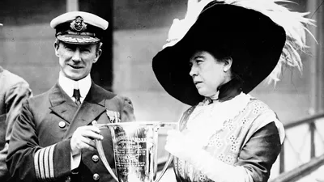
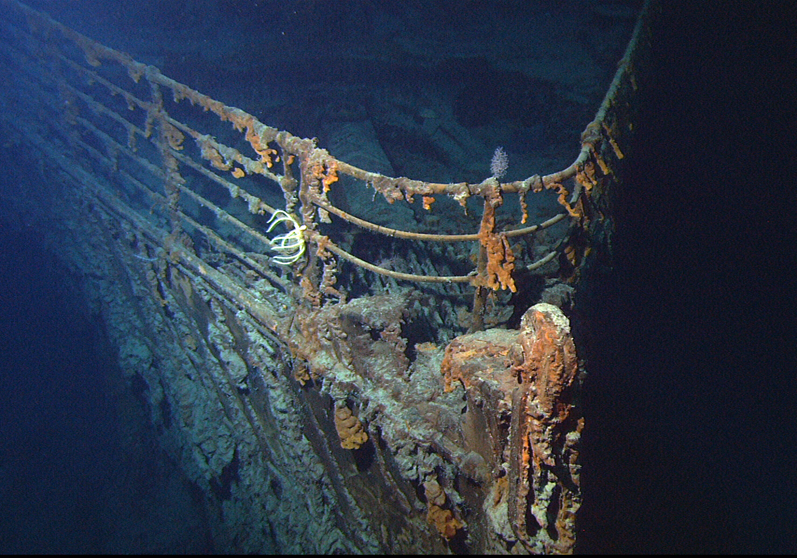

A Journey Through History
The RMS Titanic was one of the most famous ships ever built. Designed to be the largest and most luxurious ocean liner of its time, it was considered "unsinkable." However, on its maiden voyage in April 1912, tragedy struck when it collided with an iceberg and sank, leading to one of the most devastating maritime disasters in history.
Key Facts About Titanic
- Built by: Harland and Wolff, Belfast
- Launched: May 31, 1911
- Length: 882 feet (269 meters)
- Passengers & Crew: Over 2,200 people
- Sank: April 15, 1912
Survivors & Aftermath
Out of 2,224 passengers and crew, only 706 survived, mostly those who managed to board the lifeboats. The RMS Carpathia rescued the survivors, bringing them to safety in New York. The disaster led to major changes in maritime safety laws, including:
- Requiring lifeboats for all passengers
- 24-hour radio monitoring on ships
- Formation of the International Ice Patrol
Facts About the Passengers"
The Discovery of the Wreck
For decades, the Titanic lay undiscovered at the bottom of the ocean until Dr. Robert Ballard found the wreck in 1985, nearly 12,500 feet below the surface. This discovery provided a deeper understanding of the disaster, with haunting images of rusting remains, personal artifacts, and decayed interiors.
